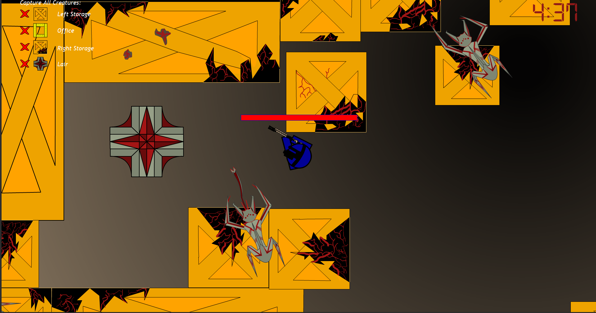
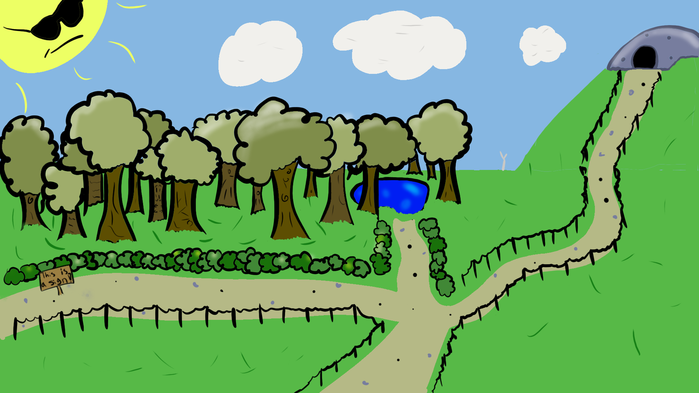

This is the first animation
This is the first group game
that I have ever completed. A rotoscopy done under the pressure of joining the class 2 weeks late.
You can see the growth from start to finish of my development of technical skills and detail oriented design philosophy.
that was done inside my major. This project was dubbed "Interdimensional Inside-out Cats" and the process gave me knowledge of group dynamics that no other project had or has since.
Over the course of this project we had one group member decide to not pull any weight, causing me to have to stay up over one full night restarting and finishing the state machine that dictated our creatures. Then the other two group members helped pick up the slack and crunched hard to finish it to the best of our ability. I will link a technical analysis here if you would like to read more about how it was created.
Zephyrus.
Invasion.
Zephyrus a character divised from the depths of my brain inspired from games such as Destiny, Deus Ex, and Bioshock. I ended up taking a picture of myself in this pose and basing it off that, but what I truly tried to focus on was my lighting and reflection work. I think it looks pretty nice, personally.

There is a story behind Zephyrus. If you would like to read the artist statement and the lore behind him you can. Artist statement is here and the lore can be found there or right here.
Invasion doesn't have a lore behind it like Zephyrus does. I could indeed make one right here and right now, but because it appears to be the same style as Zephyrus I like the idea that it acts as a history lesson for the world in which Zephyrus inhabits. Perhaps it is an alternate past where the Apollo 11 launch became a beacon for an alien race to come find us and begin their assimilation. Perhaps it is a childs imagination. The possibilities are endless. What does it make you think of?

This work was done under the prospect of taking a real world photograph and creating something new out of it. I took that picture in downtown Boise with my Samsung S10 camera. The tracework and texturing took the longest time to figure out; texturing especially as I had never done it before. Overall I am quite pleased with the final outcome of it and especially like the big alien ball emitting tendrils of alien energy.
Force of Will
Force of Will is an interactive comic created by my group and me in GIMM 250. This project demonstrated how smooth communication can lead to the completion of an idea with unprecedented prowess and grace. The goal of this project was to create an interactive comic book that tries to go over an existential topic. We chose the human condition. Sir William the knight is tasked by the king to slay the dragon that has been terrorizing his kingdom. You traverse through the town and come across civilians that all protest you killing the dragon in some kind of way. By the time you arrive to the mouth of the cave you have pondered this decision yourself and if you are truly in control of your own destiny. While in the cave you come across two alternate endings: you kill the dragon or the dragon kills you. In the latter, the cat you meet along the way saves your life, but it is all for nothing as the king kills you for not completing his quest regardless. This colorful and silly looking game covers the topic of the plight of man in a way that hadn't been seen before. The story was done by all of us, but the main ideas were done by myself and one other in our team. This project was done in Adobe Animate, yet it is something I am quite proud of.
I joined GIMM to make games. The kinds of games I want to create are not 2D point and click adventure-books. I want fun, fully rendered 3D environments and characters. So far I have not had any classes that have allowed me to create them, but once I do my portfolio will be much more colorful. I have learned very valuable practices from developing in the second dimension and I cannot wait to develop in the third.